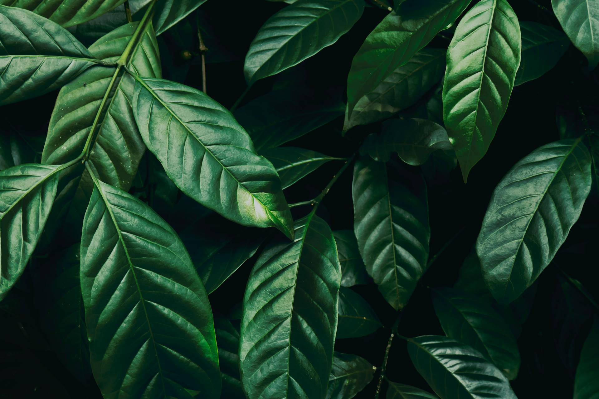
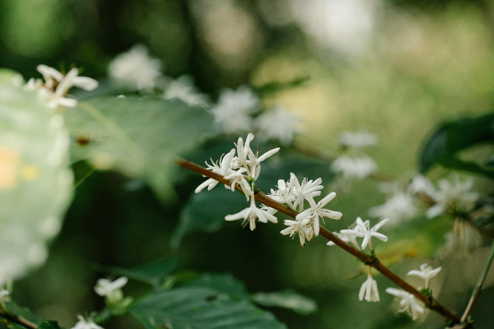
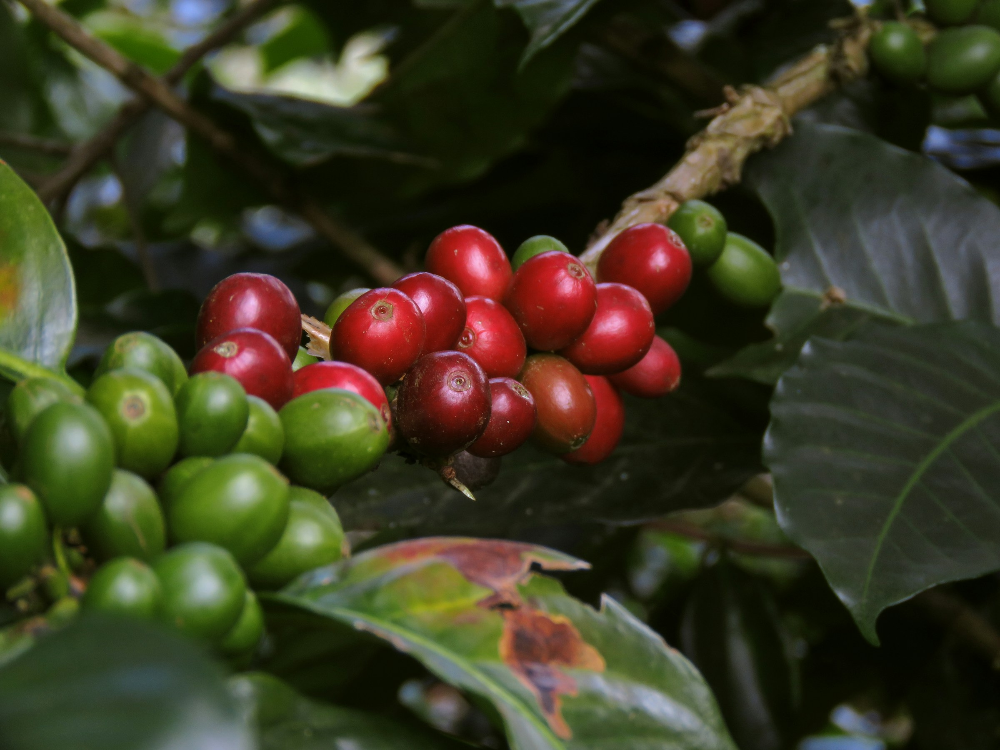

Leaves
Coffee plant leaves are typically oval-shaped with a waxy surface, ranging in color from bright green to hues of yellow, bronze, or purple. They act as a vital natural shield, protecting the delicate plant from intense daytime sun and harsh nighttime frost. Interestingly, these protective leaves contain the highest concentration of caffeine found anywhere in the coffee plant.
Flowers
The delicate, star-shaped white flowers bloom in dense clusters and are widely known for their intensely sweet fragrance that closely resembles jasmine. Following their brief blooming phase, the plant begins to develop its prized fruit—the coffee cherries. Additionally, these aromatic blossoms are often harvested and brewed to create a soothing, floral beverage known as coffee blossom tea.


Fruits
Small green berries appear when the coffee tree flower is pollinated. After they ripen, they gradually change colour and it is at this point that they remind us of cherries. Inside each berry are two beans with the flat sides facing each other.
In rare cases, a berry may contain only one coffee seed, known as a pea berry. Coffee made from such a bean is called pearl coffee. On average, a single coffee bush produces between 0.5 and 1 kg of coffee beans per year.